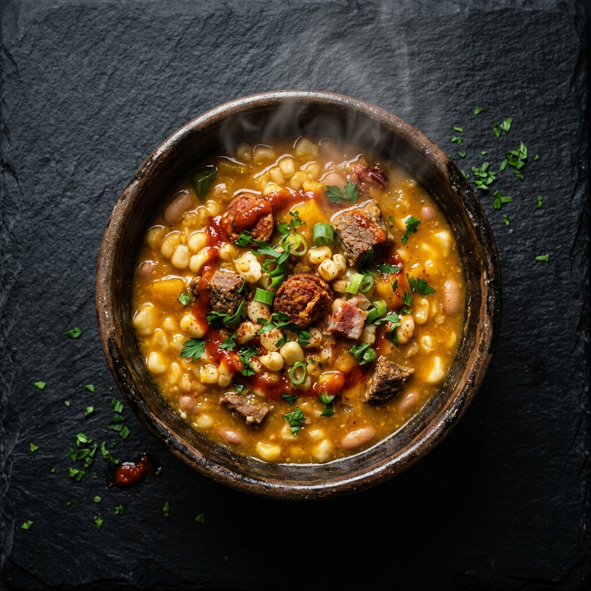

Tradición
El Locro

Disfrutar de nuestra gastronomía tradicional es parte de nuestra identidad. La clave es la moderación.
- 🥣 La porción justa: Evitá repetir el plato. Una porción moderada permite disfrutar el sabor sin sobrecargar el sistema.